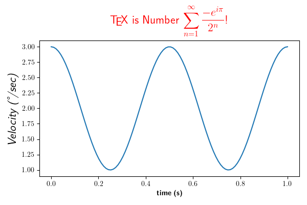

Version 3.1.2
Note
Click here to download the full example code
You can use TeX to render all of your matplotlib text if the rc
parameter text.usetex is set. This works currently on the agg and ps
backends, and requires that you have tex and the other dependencies
described in the Text rendering With LaTeX tutorial
properly installed on your system. The first time you run a script
you will see a lot of output from tex and associated tools. The next
time, the run may be silent, as a lot of the information is cached.
Notice how the label for the y axis is provided using unicode!
import numpy as np
import matplotlib
matplotlib.rcParams['text.usetex'] = True
import matplotlib.pyplot as plt
t = np.linspace(0.0, 1.0, 100)
s = np.cos(4 * np.pi * t) + 2
fig, ax = plt.subplots(figsize=(6, 4), tight_layout=True)
ax.plot(t, s)
ax.set_xlabel(r'\textbf{time (s)}')
ax.set_ylabel('\\textit{Velocity (\N{DEGREE SIGN}/sec)}', fontsize=16)
ax.set_title(r'\TeX\ is Number $\displaystyle\sum_{n=1}^\infty'
r'\frac{-e^{i\pi}}{2^n}$!', fontsize=16, color='r')
plt.show()
Total running time of the script: ( 0 minutes 1.562 seconds)
Keywords: matplotlib code example, codex, python plot, pyplot Gallery generated by Sphinx-Gallery